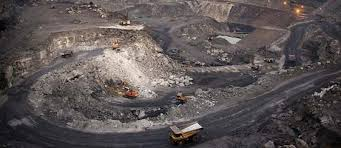

CENTRAL COALFIELDS LIMITED - THE HISTORICAL MARCH
Central Coalfields Limited is a Category-I Mini-Ratna Company since October 2007. During 2009-10,coal production of the company reached its highest-ever figure of 47.08 million tones,with net worth amounting to Rs.2644 crore against a paid-up capital of Rs.940 crore.
Formed on 1st November 1975, CCL (formerly National Coal Development Corporation Ltd) was one of the five subsidiaries of Coal India Ltd. which was the first holding company for coal in the country (CIL now has 8 subsidiaries).CENTRAL COALFIELDS LIMITED - THE HISTORICAL MARCH
CCL had a proud past. As NCDC, it heralded the beginning of nationalization of coal mines in India. National Coal Development Corporation Ltd. (NCDC) was set up in October, 1956 as Government-owned Company in pursuance of the Industrial Policy Resolutions of 1948 and 1956 of the Government of India. It was started with a nucleus of 11 old state collieries (owned by the Railways) having a total annual production of 2.9 million tonnes of coal. Until the formation of NCDC, coal mining in India was largely confined to the Raniganj coal belt in West Bengal and the Jharia coalfields in Bihar (now in Jharkhand), besides a few other areas in Bihar (now in Jharkhand) and a part of Madhya Pradesh (now Chattishgarh also) and Orissa. From its very beginning, NCDC addressed itself to the task of increasing coal production and developing new coal resources in the outlying areas, besides introducing modern and scientific techniques of coal mining. In the Second Five Year Plan (1956-1961) NCDC was called upon to increase its production from new collieries, to be opened mainly in areas away from the already developed Raniganj and Jharia coalfields. Eight new collieries were opened during this period and the production increased to 8.05 million tonnes by the end of Second Plan. Third Five Year Plan (1961-1966), though the Corporation had built up a much larger production capacity, it could not be utilized due to a sluggish domestic coal market. Production had, therefore, to be pegged down and the development of several collieries undertaken from the early part of the Plan period, had to be suspended. By this time, the contribution of NCDC to the nation's coal production (67.72 million tones) increased to around 9.6 million tonnes. With gradual rise in the demand of coal due to commissioning of new power plants and development of other coal-based industries during Fourth Five Year Plan (1969-1974), NCDC's production increased to 15.55 million tonnes by the terminal year of Fourth Five Year Plan, i.e., 1973-74.
NCDC played a pioneering role in India's coal industry by introducing large-scale mechanization and modern and scientific methods of coal mining for promoting conservation of high grades of coal and exploiting deep coking coal seams necessitating heavy capital investment and sophisticated technical skill. NCDC went in for foreign collaboration with countries such as Poland and the USSR besides limited collaboration with Japan, West Germany and France. NCDC's role can be truly assessed by its contribution towards growth of new coal resources in, what are known as, the outlying areas. The opening of new mines in Madhya Pradesh, Orissa and Maharashtra brought about a significant change in these regions by creating new opportunities of industrialization and employment. Development of the Singrauli coalfields has brought coal almost to the door steps of northern India. With the development and application of improved mining techniques, emphasis on planning, design and research; introduction of modern mine management systems and an enlightened industrial relations policy, NCDC was able to provide the infrastructure for the total nationalization of coal industry in the country.NATIONALIZATION OF COAL MINES
A major event in the history of Indian coal industry during the Fourth Plan Period (1969-74) was the nationalisation of the erstwhile privately owned coal mines in two phases. In the first phase, the management of coking coal mines was taken over by the Government of India on 17th Oct. 1971 and nationalization was effective from 5th January 1972. A state owned company, Bharat Coking Coal Ltd. was formed for managing coking coal mines. For convenience of management, BCCL collieries in the East Bokaro coalfields in Bihar (now Jharkhand) were transferred to NCDC, and its projects in Central Jharia region viz., Sudamdih and Moonidih deep shaft mines were handed over, in stages to BCCL. In the second phase of nationalisation, the management of non-coking coal mines in the country, excepting the captive coal mines of the two steel plants, viz., TISCO and IISCO, was taken over by the Government on 31st January 1973. These mines were subsequently nationalized with effect from 1st May 1973 and another state-owned company, Coal Mines Authority Ltd. (CMAL) came into being with headquarters at Calcutta (now Kolkata) to manage and develop NCDC collieries and other newly nationalized units. NCDC itself, in this process, became a division of CMAL which owned 36 collieries under commercial production in Bihar, Orissa, Madhya Pradesh and Maharashtra, besides four coal washeries, one by-product coke oven plant, two large central workshops and manpower of about 71,000. The formation of CMAL witnessed regrouping of the coal mines into three divisions, namely, Western, Central and Eastern. The regrouping had to be done for the convenience of management, keeping in view the geographical location of the collieries.
1.As a result, NCDC units located in the States of Maharashtra and Madhya Pradesh, with the exception of Singrauli Coalfields, became a part of the Western Division.2.The Central Division consisted of all the old collieries of NCDC in Orissa and Bihar (except Sudamdih and Moonidih which had been handed over to BCCL) and those acquired by CMAL after take-over in Giridih, East Bokaro, West Bokaro, South Karanpura, North Karanpura, Hutar & Daltonganj Coalfields in Bihar. The Central Division consisted of 64 collieries, four coal washeries, one by-product coke oven plat, on bee-hive coke plant and one central workshop having a manpower of 1,11,500.
